Chapter 8 Principle Component Analysis
8.1 Basic Concepts
The goal of PCA is to find a direction of data that displays the largest variance. A nice demonstration of this search of direction is provided at this r-bloggers:

Suppose we have a data matrix with \(n\) observations and \(p\) variables. Principle Component Analysis (PCA) is always done by centering the variables, i.e., subtract column means from each column of the \(n \times p\) data matrix.
par(mfrow=c(1,2))
# generate some random data from a 2-dimensional normal distribution.
library(MASS)
n = 1000
Sigma = matrix(c(0.5, -0.65, -0.65, 1), 2, 2)
x = mvrnorm(n, c(1, 2), Sigma)
par(mar=c(2, 2, 2, 0.3))
plot(x, main = "Before Centering",
xlim = c(-5, 5), ylim= c(-5, 5), pch = 19, cex = 0.5)
abline(h = 0, col = "red")
abline(v = 0, col = "red")
par(mar=c(2, 2, 2, 0.3))
x = scale(x, scale = FALSE)
plot(x, main = "After Centering",
xlim = c(-5, 5), ylim= c(-5, 5), pch = 19, cex = 0.5)
abline(h = 0, col = "red")
abline(v = 0, col = "red") 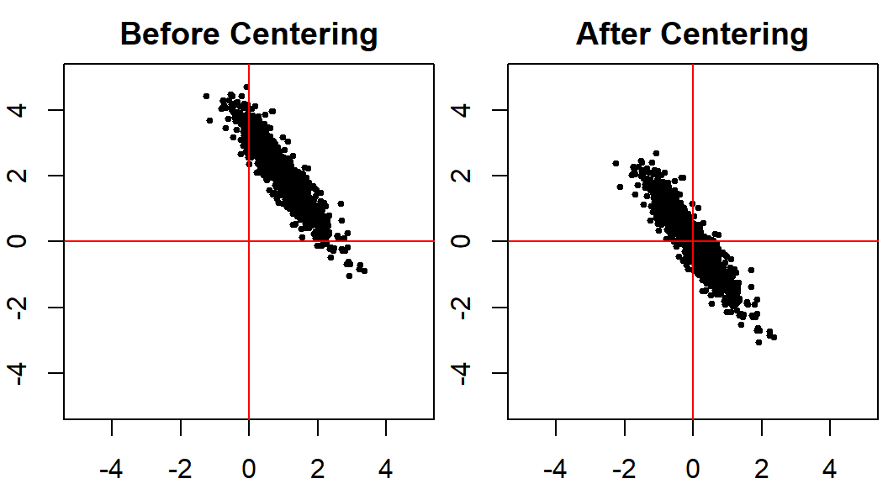
For our two-dimensional case, we are trying to find a line (direction) on this plain, such that if all points are projected onto this line, their coordinates have the largest variance, compared with any other line.
par(mar=c(2, 2, 0.3, 0.3))
plot(x, xlim = c(-3.5, 3.5), ylim= c(-3.5, 3.5), pch = 19, cex = 0.5)
abline(h = 0, col = "red")
abline(v = 0, col = "red")
# using pca
pc1 = princomp(x)$loadings[,1]
abline(a = 0, b = pc1[2]/pc1[1], col = "deepskyblue", lwd = 4)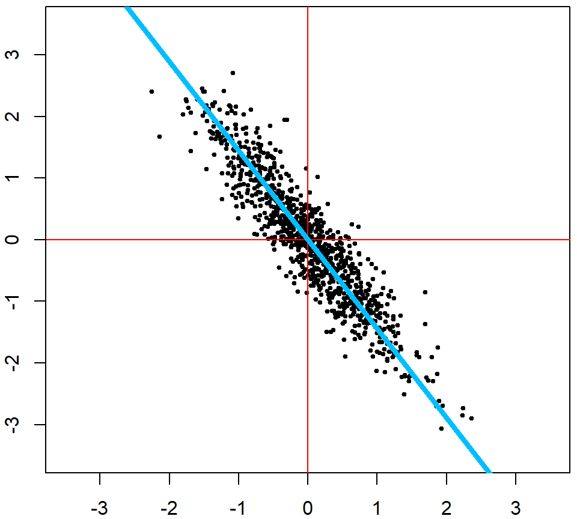
We can then take the residuals (after projecting onto this line), and find the largest variance direction of the residuals
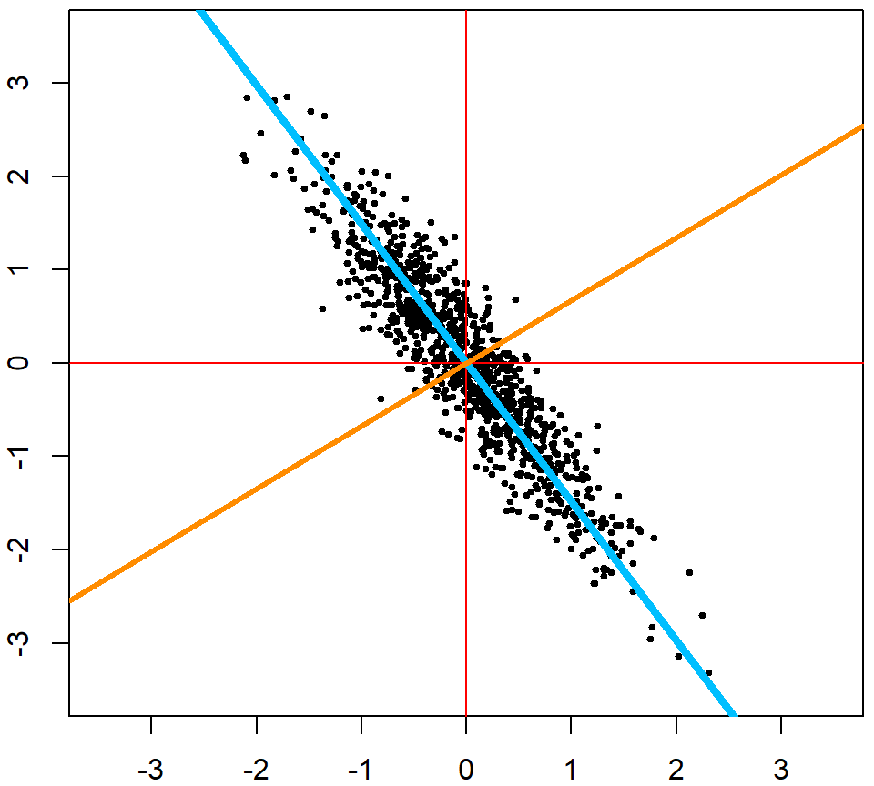
## Comp.1 Comp.2
## 1.185000 0.238292We usually visualize the data in these two directions instead of the original covariates. Note that the coordinates on the PC’s can be obtained using either the scores in the fitted object of princomp, or simply multiply the original data matrix by the loadings.
pcafit <- princomp(x)
# the new coordinates on PC's
head(pcafit$scores)## Comp.1 Comp.2
## [1,] -0.02619076 0.03715597
## [2,] 0.58773679 -0.10796453
## [3,] -0.10116274 0.22052881
## [4,] -0.92927231 -0.38445030
## [5,] -0.48991774 -0.16755262
## [6,] 0.62557804 -0.22859175 # direct calculation based on projection
head(x %*% pcafit$loadings)## Comp.1 Comp.2
## [1,] -0.02619076 0.03715597
## [2,] 0.58773679 -0.10796453
## [3,] -0.10116274 0.22052881
## [4,] -0.92927231 -0.38445030
## [5,] -0.48991774 -0.16755262
## [6,] 0.62557804 -0.22859175 # visualize the data on the PCs
# Note that the both axies are scaled
par(mar=c(4, 4.2, 0.3, 0.3))
plot(pcafit$scores[,1], pcafit$scores[,2], xlab = "First PC", ylab = "Second PC", pch = 19, cex.lab = 1.5)
abline(h = 0, col = "deepskyblue", lwd = 4)
abline(v = 0, col = "darkorange", lwd = 4)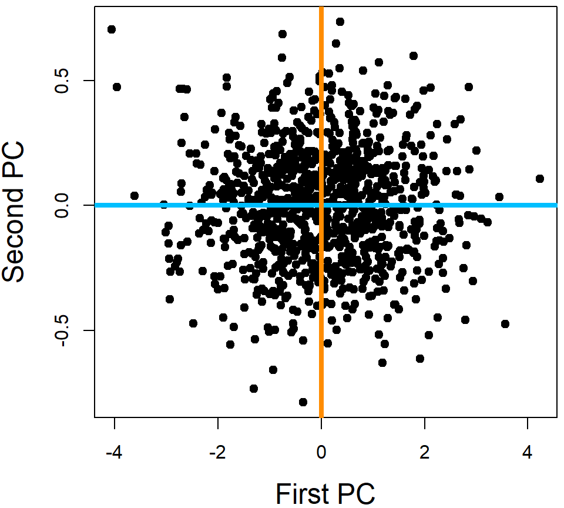
Note that there are many different functions in R that performs PCA. princomp and prcomp are the most popular ones.
8.1.1 Note: Scaling
You should always center the variables when performing PCA, however, whether to use scaling (force each variable to have a standard deviation of 1) depends on the particular application. When you have variables that are extremely disproportionate, e.g., age vs. RNA expression, scaling should be used. This is to prevent some variables from dominating the PC loadings due to their large scales. When all the variables are of the similar type, e.g., color intensities of pixels in a figure, it is better to use the original scale. This is because the variables with larger variations may carry more signal. Scaling may lose that information.
8.2 Example 1: iris Data
We use the iris data again. All four variables are considered in this analysis. We plot the first and second PC directions.
iris_pc <- prcomp(iris[, 1:4])
library(ggplot2)
ggplot(data = data.frame(iris_pc$x), aes(x=PC1, y=PC2)) +
geom_point(color=c("chartreuse4", "darkorange", "deepskyblue")[iris$Species], size = 3)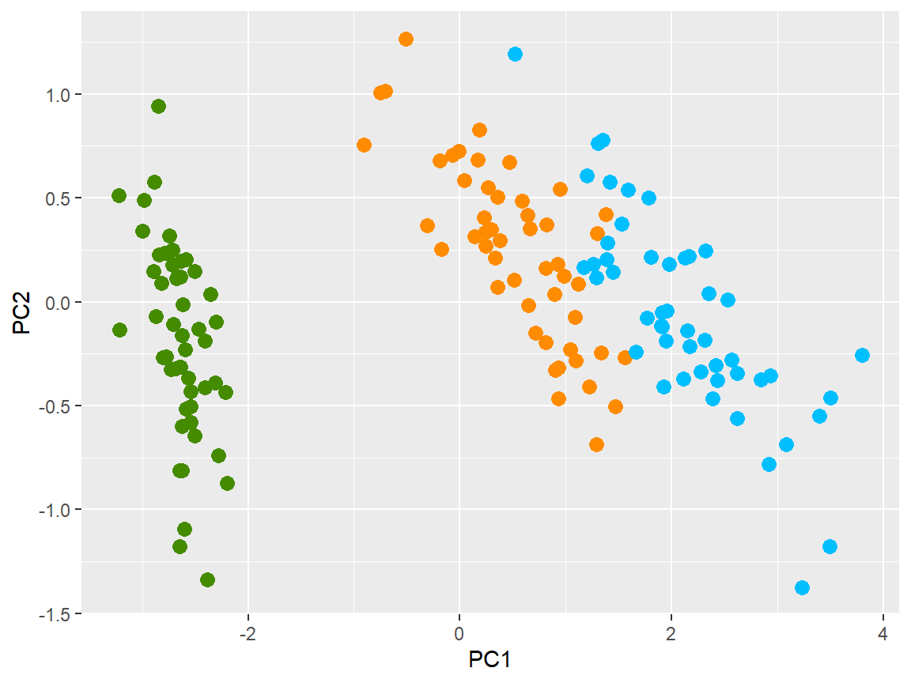
One may be interested in plotting all pair-wise direction to see if lower PC’s provide useful information.
pairs(iris_pc$x, col=c("chartreuse4", "darkorange", "deepskyblue")[iris$Species], pch = 19)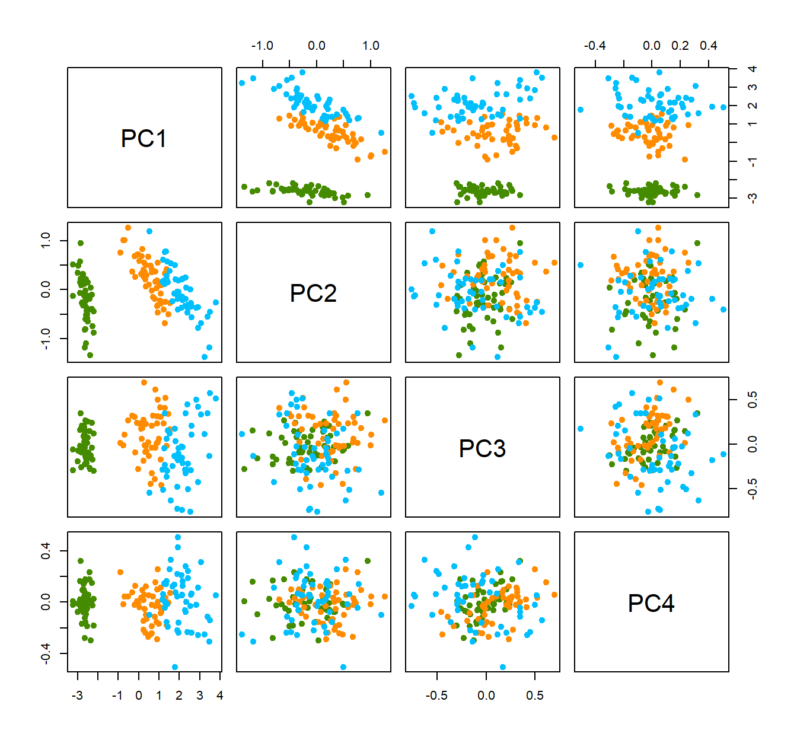
However, usually, the lower PC’s are less informative. This can also be speculated from the eigenvalue plot, which shows how influential each PC is.
plot(iris_pc, type = "l", pch = 19, main = "Iris PCA eigen-values")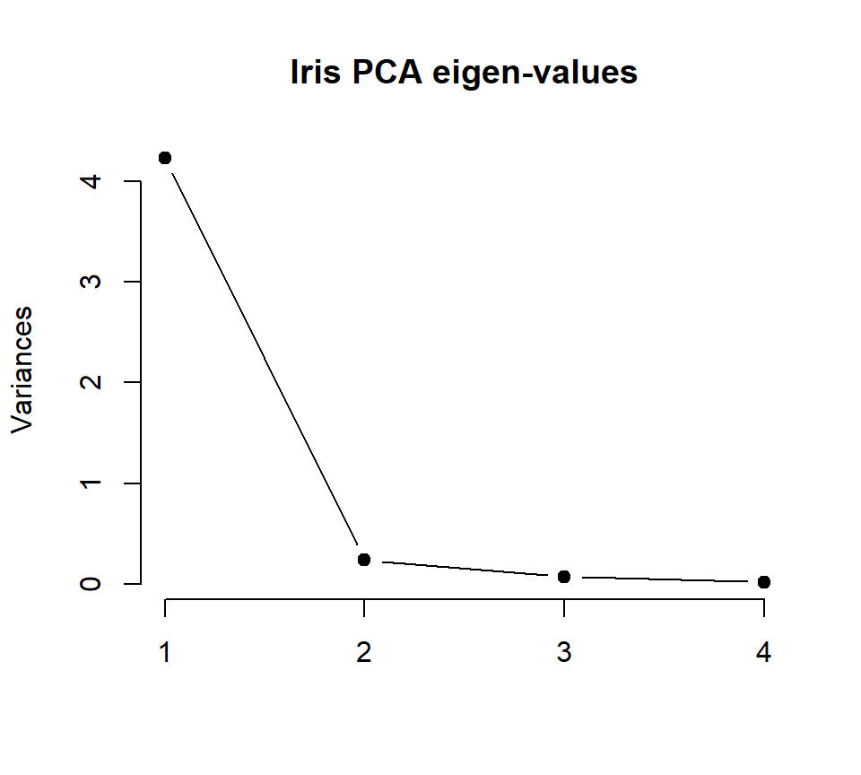
Feature contributions to the PC can be accessed through the magnitude of the loadings. This table shows that Petal.Length is the most influential variable on the first PC, with loading \(\approx 0.8567\).
iris_pc$rotation## PC1 PC2 PC3 PC4
## Sepal.Length 0.36138659 -0.65658877 0.58202985 0.3154872
## Sepal.Width -0.08452251 -0.73016143 -0.59791083 -0.3197231
## Petal.Length 0.85667061 0.17337266 -0.07623608 -0.4798390
## Petal.Width 0.35828920 0.07548102 -0.54583143 0.7536574We can further visualize this on a plot. This can be helpful when the number of variables is large.
features = row.names(iris_pc$rotation)
ggplot(data = data.frame(iris_pc$rotation), aes(x=PC1, y=PC2, label=features,color=features)) +
geom_point(size = 3) + geom_text(size=3)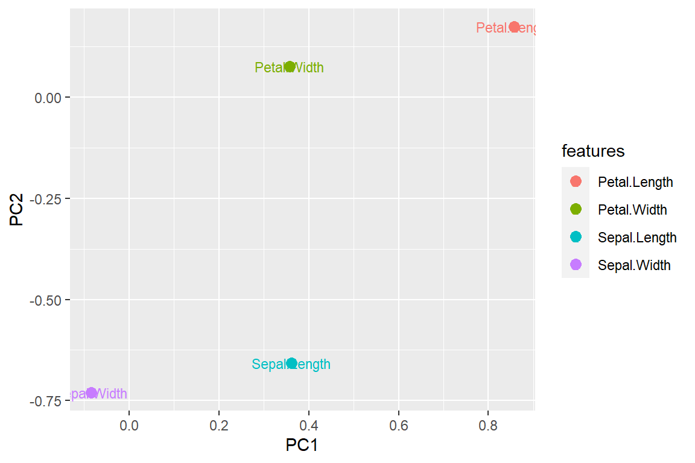
8.3 Example 2: Handwritten Digits
The handwritten zip code digits data contains 7291 training data and 2007 testing data. Each image is a \(16 \times 16\)-pixel gray-scale image. Hence they are converted to a vector of 256 variables.
library(ElemStatLearn)
# Handwritten Digit Recognition Data
# the first column is the true digit
dim(zip.train)## [1] 7291 257Here is a sample of some images:
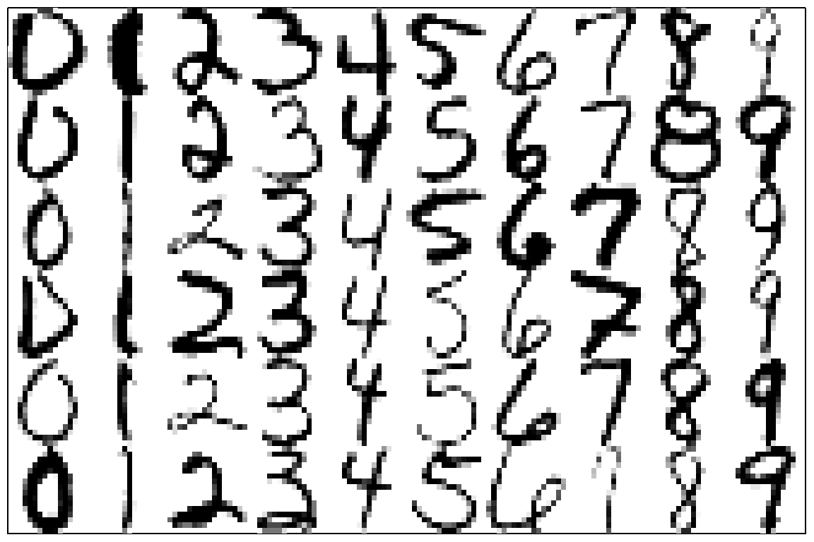
Let’s do a simpler task, using just three letters: 1, 4 and 8.
zip.sub = zip.train[zip.train[,1] %in% c(1,4,8), -1]
zip.sub.truth = as.factor(zip.train[zip.train[,1] %in% c(1,4,8), 1])
dim(zip.sub)## [1] 2199 256 zip_pc = prcomp(zip.sub)
plot(zip_pc, type = "l", pch = 19, main = "Digits 1, 4, and 8 PCA eigen-values")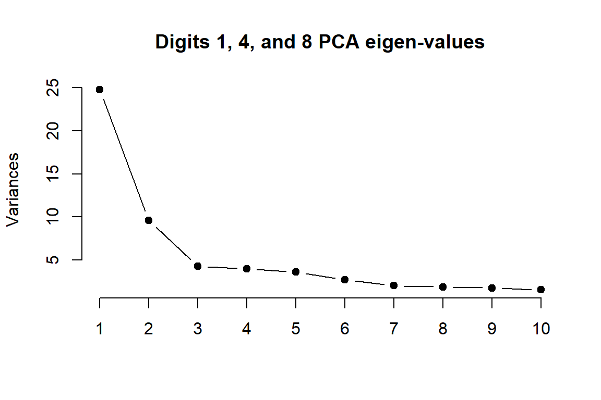
The eigenvalue results suggest that the first two principal components are much more influential than the rest. A pair-wise PC plot of the first four PC’s may further confirm that speculation.
pairs(zip_pc$x[, 1:4], col=c("chartreuse4", "darkorange", "deepskyblue")[zip.sub.truth], pch = 19)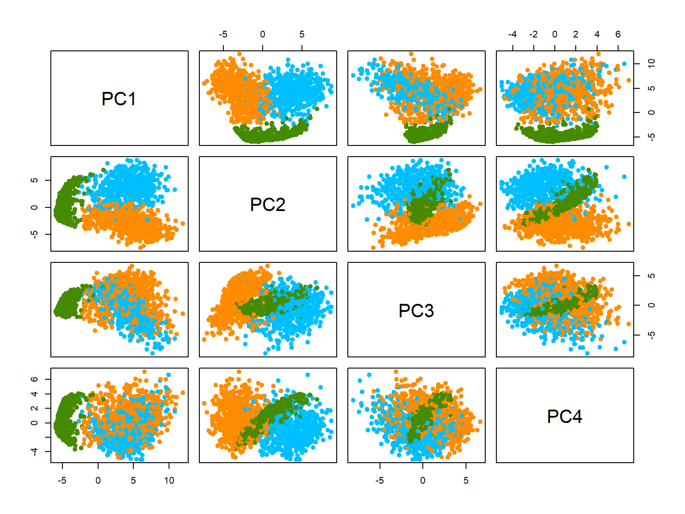
Let’s look at the first two PCs more closely. Even without knowing the true class (no colors) we can still vaguely see 3 clusters.
library(ggplot2)
ggplot(data = data.frame(zip_pc$x), aes(x=PC1, y=PC2)) +
geom_point(size = 2)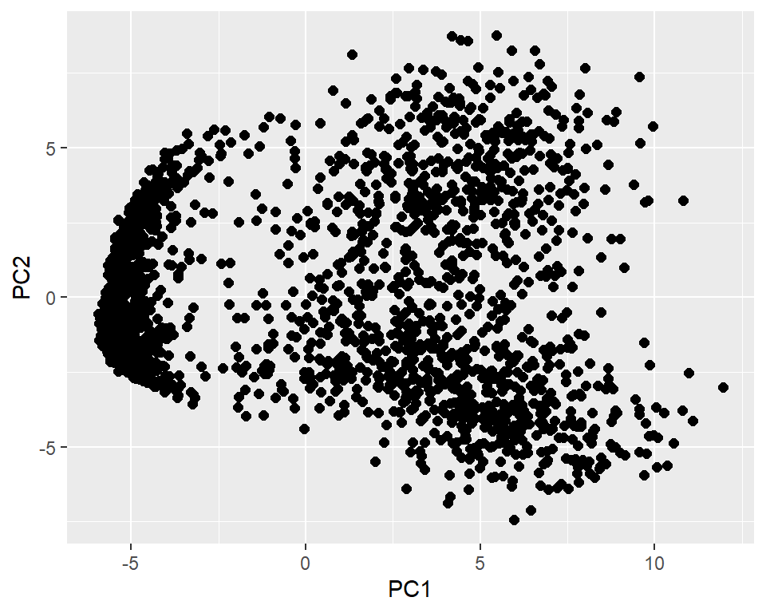
Finally, let’s briefly look at the results of PCA for all 10 different digits. Of course, more PC’s are needed for this task. You can also plot other PC’s to get more information.
library(colorspace)
zip_pc <- prcomp(zip.train)
plot(zip_pc, type = "l", pch = 19, main = "All Digits PCA eigen-values")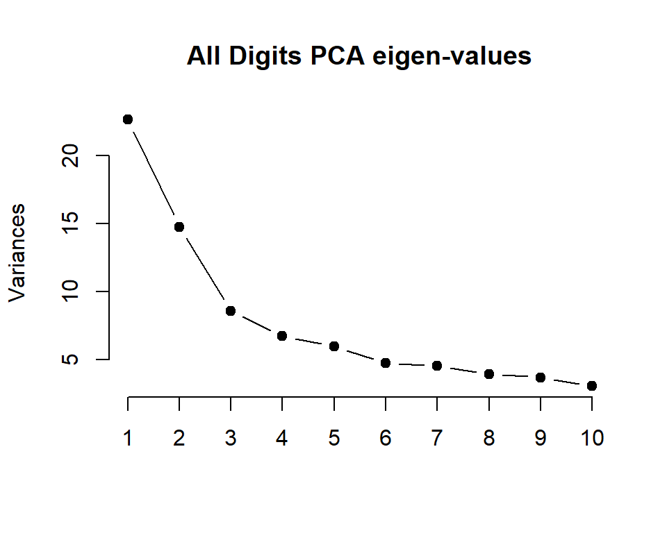
ggplot(data = data.frame(prcomp(zip.train)$x), aes(x=PC1, y=PC2)) +
geom_point(color = rainbow_hcl(10)[zip.train[,1]+1], size = 1)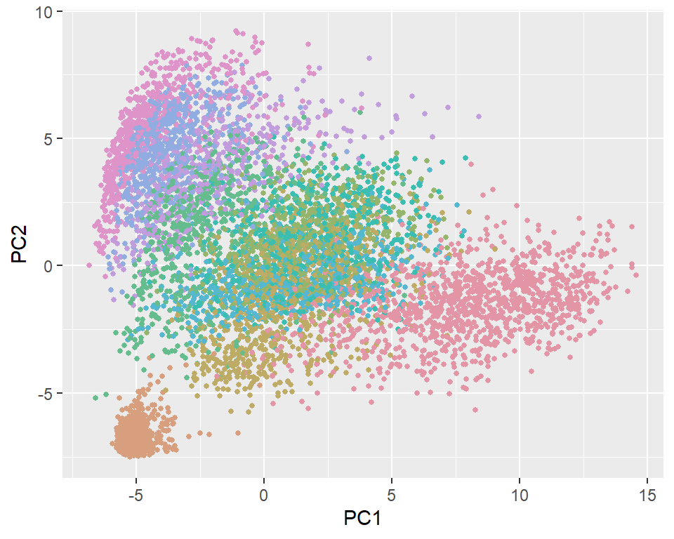